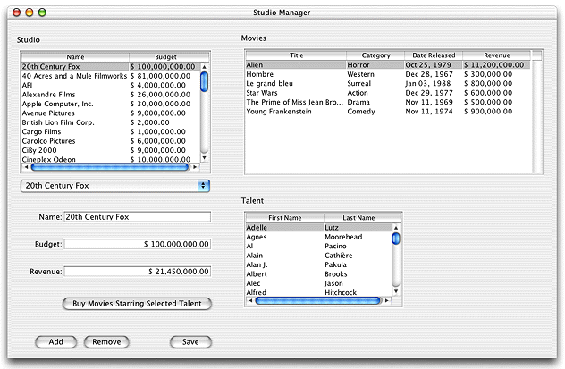

| PATH |

The application you'll be creating in this chapter, Studio Manager, is based on the WOMovies sample database distributed with Enterprise Objects Framework (you must have the sample databases and models installed to do this tutorial). It centers around three types of enterprise objects: Studio, Movie, and Talent. Studios own movies, and they have a budget for buying new movies. Movies feature actors, or talent. The Studio Manager application lets you transfer movies between studios and buy all of the movies starring a particular actor. It also lets you add, modify, and delete studios.

© 2001 Apple Computer, Inc.